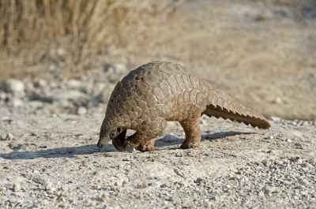

Pangolins
There are eight different species of pangolins in the world.
They can be found in Asia and Africa. Pangolins are constantly
trafficked for their meat and scales, which has caused them to become
endangered. According to the INCU Red List of Threatened Species,
three of the eight types of pangolins are critically endangered,three
are endangered and two are vulnerable. All eight species of pangolin are protected under
international and national laws making it illegal to hunt, trade, or sell pangolins.
|

|
Size
Their scales are made up of keratin, which is the same material that is in fingernails, hair, and horn(s).
Their size can range from 4.5 inches to 4.5 feet long, and they can weigh up to 72 pounds.
|

|
Diet
Pangolins eat larvae, termites, and ants. They catch their prey with their long sticky tongues.
When a Pangolin fully extends it’s tongue, it can be longer than it’s entire body length!
|

|
Behavior
Pangolins are mostly nocturnal, which means they are usually active at night. Some Pangolins can climb trees,
but most live on the ground. When they feel threatened, Pangolins will roll up into a ball, using their scales
to protect themselves. They also have the ability to release a stinky fluid from their tails to defend themselves.
|
|
For more information on Pangolins, check out this video. |